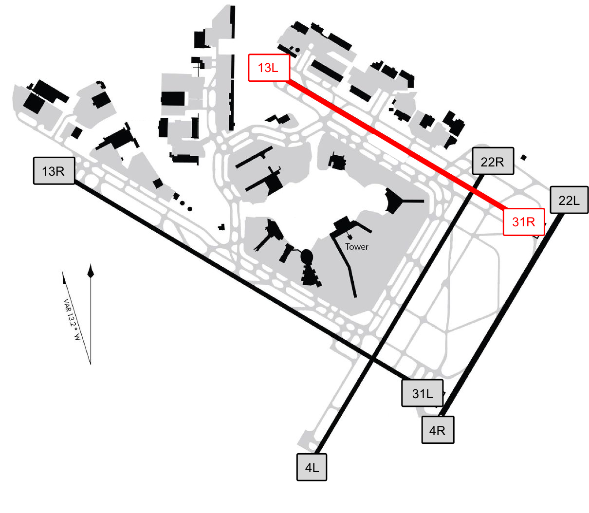

Due to a runway closure until next winter 2020, when there's a strong NW or SE wind at JFK, major traffic management problems ensue.
Avoid JFK on:
Why
13L / 31R is closed until winter 2020, and historically has handled 1/3 of all arrivals into JFK.

When the wind results in a ~30 knot crosswind or greater on 4L/22R and 4R/22L, JFK is forced to use only a single runway (13R/31L) for all arrivals and departures.
What happens when JFK uses a single runway?
Now more than three dozen aircraft waiting to take off at @JFKairport, with the line taking up all of runway 22L, the taxiway to 22R and then more than half of 22R itself 😧 pic.twitter.com/0pisnCVaV1
— Jason Rabinowitz (@AirlineFlyer) April 16, 2019
With strong winds from the west, @JFKairport is down to single runway ops, using 31L only.
— Jason Rabinowitz (@AirlineFlyer) April 15, 2019
If this keeps up, the evening departure bank will be....extremely bad. pic.twitter.com/dhVYjOR47g
All of these planes are waiting to take off from a very windy, single runway @JFKairport pic.twitter.com/BHaORdP0k8
— Jason Rabinowitz (@AirlineFlyer) April 15, 2019
We have a domestic diversion due to the single runway operation at JFK. JBU424's headed to SWF pic.twitter.com/0as13CIGLh
— Ethan Klapper (@ethanklapper) April 15, 2019
Due to RWY-TAXI/CONSTRUCTION AND WEATHER/WIND traffic mgmt prgrm causing some arriving flight delays averaging 5 hours and 21 minutes. #JFK
— JFK Flight Delays (@FlyFAA_JFK) April 15, 2019